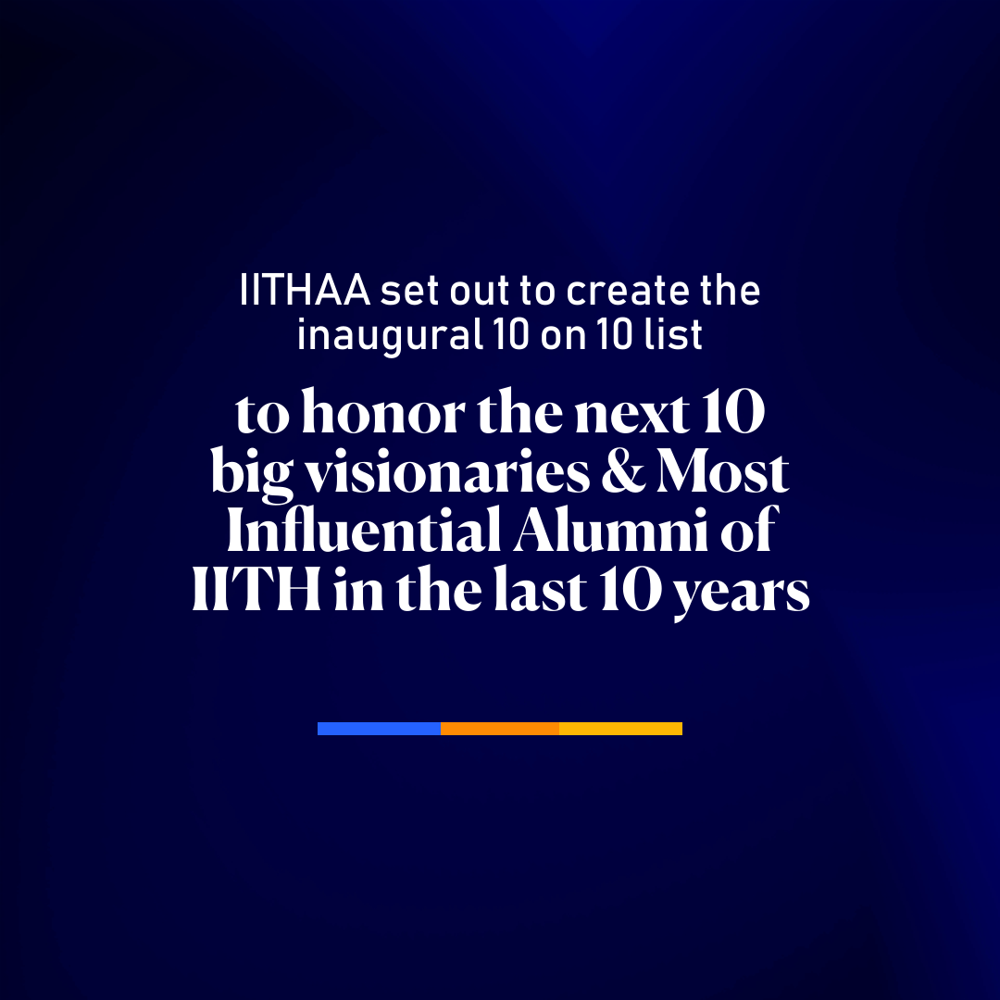

<section style="margin-top: 10vh">
 <div class="container">
  <div class="row justify-content-center">
   <div class="col-lg-6" style="padding: 5%">
    
   </div>
   <div class="col-lg-6" style="padding: 5%">
    <h2><br>About 10/10</h2>
    <br /><br />
    <p>
     The 2022 10/10 Alumni Summit is the first-of-its-kind event in India to
     celebrate the visionary leadership culture among IIT alumnus. IITs are
     known to produce prominent world leaders such as Sunder Pichai (Google
     CEO), Parag Agrawal (Twitter CEO), Arvind Agrawal (Delhi CM, founder AAP)
     and Raghuram Rajan (ex RBI Governor).<br /><br />
     The <b>10/10 Alumni Summit</b> seeks to support and promote visionary
     leadership in all spheres of life including academia, entrepreneurship,
     society and administration and inspire young minds to inculcate visionary
     leadership as a part of culture and society.
    </p>
   </div>
   <div class="col-lg-12" style="padding: 3%">
    The award is conferred every two years to recognize and honor the 10 most
    influential alumni of IITH in the last 10 years for their visionary outlook
    in various fields such as academis, entrepreneurship, administration, and
    society.
    <br /><br />
    The award intends to recognize accomplishment in visionary thinking and to
    serve as a marker of distinction in various domains. A jury of distinguished
    leaders various domains from India and abroad examines the nominee’s
    achievements of the nominees against various metrics, placing the winners on
    par with the finest visionaries in the world.
   </div>
   <div class="col-lg-12" style="padding: 3%">
    <h5>
     To celebrate this, we will have a 1-2 day event at the end of November with
     an official magazine and press release.
    </h5>
   </div>
  </div>
 </div>
</section>
